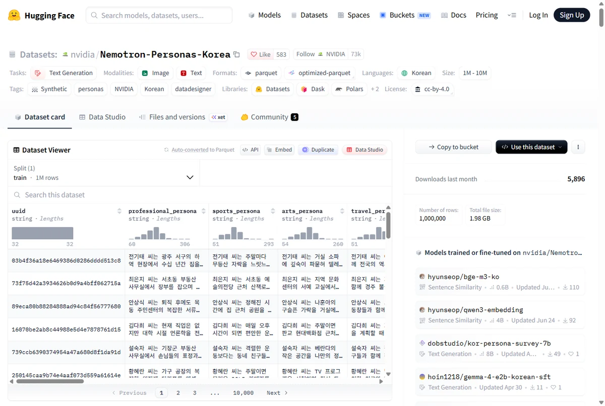
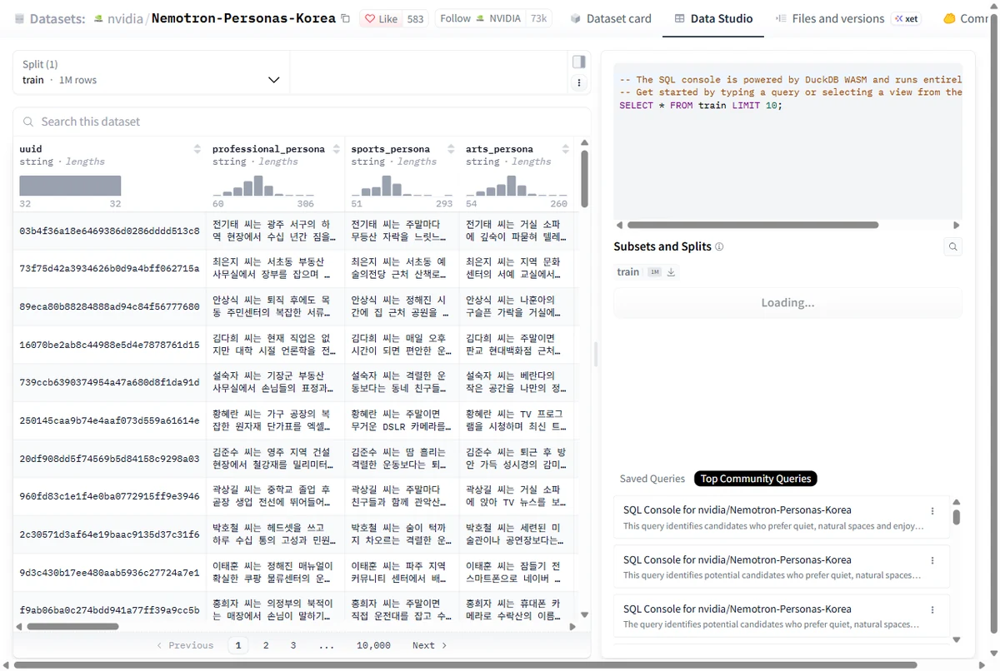
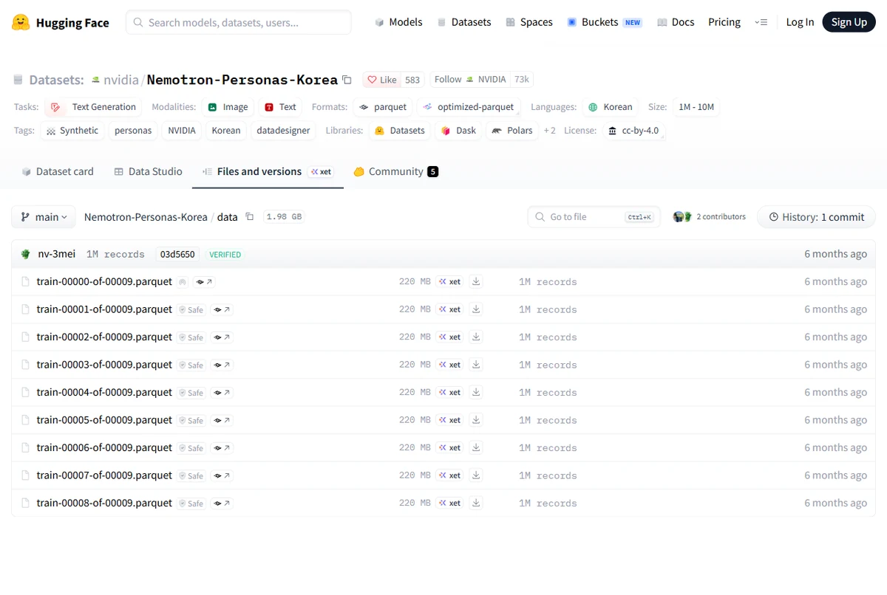
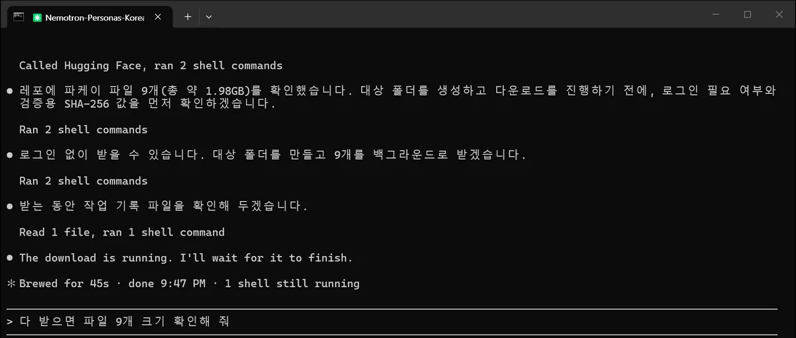
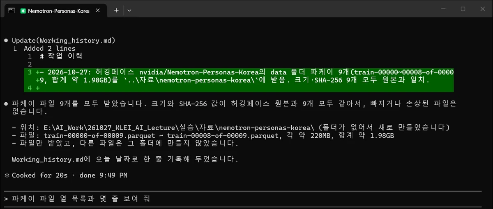
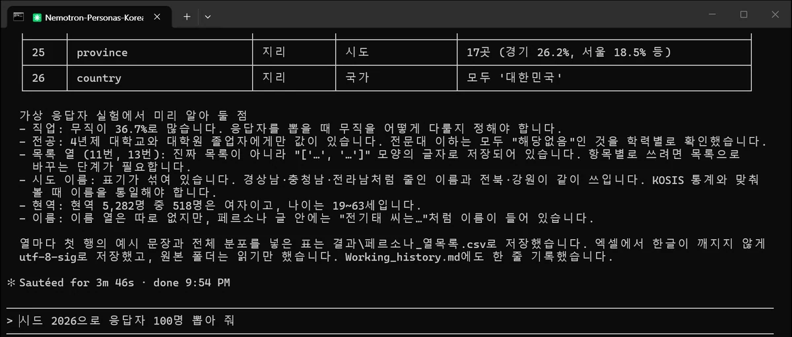
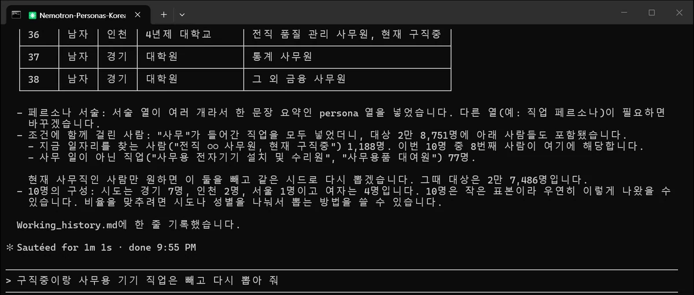
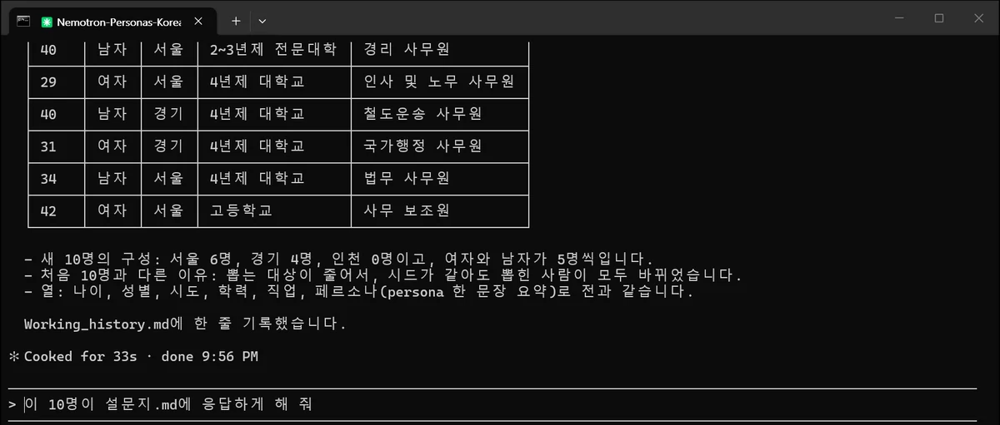
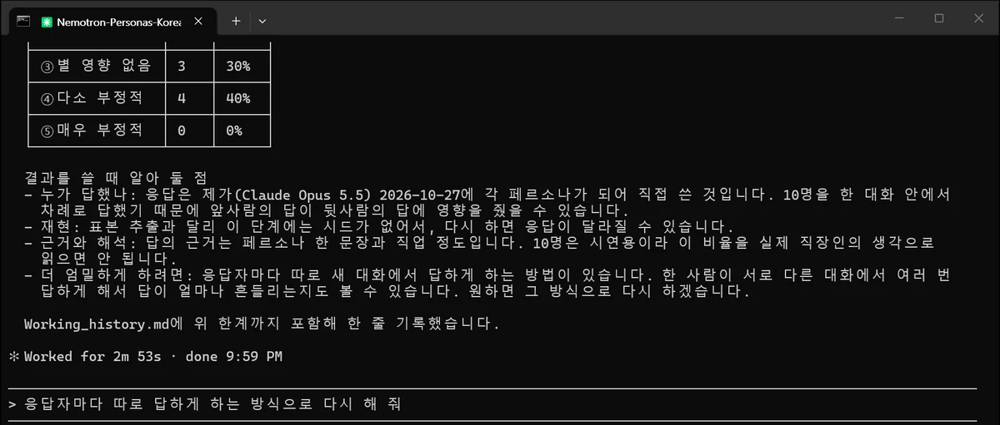

따라 하기 ①
한국인 페르소나로
가상 설문 해 보기
NVIDIA가 공개한 한국인 가상 인물 100만 명 자료를 내려받아 별도 폴더에 두고, 클로드 코드가 그 폴더를 참조해 표본을 뽑고 설문에 답하게 합니다.
1어떤 자료인가
Nemotron-Personas-Korea는 NVIDIA가 2026년 4월 허깅페이스에 공개한 한국인 페르소나 데이터 셋입니다. 실제 사람이 아니라, 국가통계포털(KOSIS)·대법원·국민건강보험공단·농촌경제연구원·NAVER Cloud 통계의 분포에 맞춰 만든 가상 인물입니다.
| 규모 | 100만 명, 항목(열) 26개 |
|---|---|
| 파일 | 파케이(.parquet) 파일 9개, 합계 약 2GB (파일 하나에 약 11만 명) |
| 이용 조건 | CC BY 4.0: 출처를 밝히면 자유롭게 쓸 수 있습니다 |
| 주소 | huggingface.co/datasets/nvidia/Nemotron-Personas-Korea |
항목은 크게 인구통계, 지역, 페르소나 서술로 나뉩니다. 아래 값과 비율은 6단계에서 클로드 코드가 100만 명 전체를 세어 정리한 것입니다.
| 열 이름 | 뜻 | 값이나 분포 |
|---|---|---|
sex, age | 성별, 나이 | 여자 50.4%·남자 49.6%, 19~99세(평균 50.7세) |
marital_status | 혼인 상태 | 배우자있음 59.3%, 미혼 25.7%, 사별 8.8%, 이혼 6.3% |
education_level | 최종 학력 | 고등학교 33.1%, 4년제 대학교 27.1%, 2~3년제 전문대학 15.0% 등 7가지 |
bachelors_field | 전공 계열 | 4년제 대학교·대학원 졸업자만 값이 있고, 나머지는 '해당없음' |
occupation | 직업 | 2,120가지. 무직 36.7%, 건물 청소원 1.8%, 건물 경비원 1.7%, 경리 사무원 1.6% 등 |
family_type, housing_type | 가족 형태, 주거 형태 | 배우자·자녀와 거주 27.0% 등 39가지 / 아파트 62.1% 등 6가지 |
province, district | 시도, 시군구 | 17개 시도(경기 26.2%, 서울 18.5% 등), 252개 시군구 |
persona | 한 문장 요약 | "OOO 씨는 광주 서구에서 평생 하역 일을 하며 살아온 70대 가장으로..." 같은 서술 |
*_persona 6개 | 분야별 서술 | 직업·스포츠·예술·여행·음식·가족 장면을 따로 쓴 서술 |
skills_*, hobbies_* 등 | 속성 서술 | 문화적 배경, 기술·전문성, 취미·관심사, 경력 목표 |
2웹에서 먼저 둘러보기
위 주소를 열면 데이터 셋 소개 화면이 나옵니다. 로그인하지 않아도 보고 내려받을 수 있습니다.


3폴더 만들기
파일 탐색기에서 새 폴더로 아래 네 폴더를 만듭니다. 원본 자료와 실험 폴더를 나누는 이유는 시작 전 준비 E에 적어 두었습니다.
실습\
├─ 자료\
│ └─ nemotron-personas-korea\ ← 원본을 받을 곳 (실험이 여러 개여도 여기 하나만)
└─ 가상응답자_실험\
└─ 결과\ ← 클로드 코드가 만든 파일이 쌓일 곳
4CLAUDE.md 쓰기: 자료 위치를 알려 두기
가상응답자_실험 폴더에 CLAUDE.md 파일을 만듭니다. 클로드 코드는 이 폴더에서 시작할 때마다 이 파일을 먼저 읽기 때문에, 원본 위치와 규칙을 매번 말하지 않아도 됩니다.
- 탐색기 위쪽 보기 → 표시 → 파일 확장명을 켭니다. 이걸 켜지 않으면 파일 이름이
CLAUDE.md.txt가 되어도 알아채기 어렵습니다. - 폴더 빈 곳에서 오른쪽 클릭 → 새로 만들기 → 텍스트 문서를 고르고, 이름을
CLAUDE.md로 바꿉니다('확장명을 바꾸겠느냐'고 물으면 예). - 메모장으로 열어 아래 내용을 붙여 넣고 저장합니다. 첫 번째 경로는 내 PC의 경로로 바꿉니다.
자료\nemotron-personas-korea폴더를 탐색기로 열고 주소창을 클릭하면 나오는 경로를 복사해 넣으면 됩니다.
# 가상 응답자 실험 ## 자료 위치 - 페르소나 원본: `E:\AI_Work\261027_KLEI_AI_Lecture\실습\자료\nemotron-personas-korea\` (NVIDIA Nemotron-Personas-Korea, 파케이 파일 9개, 100만 명) - 이 폴더는 읽기만 한다. 복사하거나 고치거나 지우지 않는다. - 파일이 커서(합계 약 2GB) 필요한 열만 골라 읽는다. ## 작업 규칙 - 결과물은 이 폴더의 `결과\`에 저장한다. CSV는 엑셀에서 한글이 깨지지 않게 `utf-8-sig`로 저장한다. - 무작위로 뽑을 때는 난수 시드 2026을 쓴다. - 한 일은 `Working_history.md`에 날짜와 함께 한 줄로 기록한다.
- 읽기만 한다: 원본이 실수로 바뀌거나 지워지지 않게 막습니다.
- 필요한 열만: 서술 열까지 통째로 읽으면 메모리를 몇 GB씩 씁니다.
- utf-8-sig: 이렇게 저장해야 엑셀로 열었을 때 한글이 깨지지 않습니다.
- 시드 2026: 같은 시드로 뽑으면 다음에 다시 해도 같은 사람들이 뽑혀서 결과를 재현할 수 있습니다.
- Working_history.md: 무엇을 했는지 한 줄씩 남겨 두면, 나중에 다시 열었을 때 클로드 코드도 나도 이어서 할 수 있습니다.
같은 내용으로 AGENTS.md를 하나 더 만들어 둡니다(파일을 복사해 이름만 바꾸면 됩니다). 코덱스는 이 파일을 읽습니다.
5자료 내려받기
방법 A. 브라우저로 받기
데이터 셋 화면에서 Files and versions 탭 → data 폴더로 들어가면 파일 9개가 보입니다. 각 줄의 아래 화살표 버튼을 누르면 내려받기가 시작됩니다. 받은 파일을 실습\자료\nemotron-personas-korea\로 옮깁니다.

방법 B. 클로드 코드에게 부탁하기
가상응답자_실험 폴더에서 터미널을 열고(준비 C) claude를 실행한 뒤 이렇게 입력합니다. ..\자료는 '한 단계 위 폴더의 자료 폴더'라는 뜻입니다.
허깅페이스 nvidia/Nemotron-Personas-Korea의 data 폴더에 있는 파케이 파일 9개를 ..\자료\nemotron-personas-korea 에 받아 줘


6자료 살펴보기
본격적으로 쓰기 전에 무엇이 들어 있는지부터 물어봅니다. CLAUDE.md에 위치를 적어 두었으니 경로는 말하지 않아도 됩니다.
페르소나 데이터에 몇 명이 있고 어떤 항목(열)이 있는지 표로 정리해 줘

표와 함께 미리 알아 둘 점도 짚어 주었습니다. 실험을 설계할 때 그대로 쓸 만한 내용입니다.
- 직업이 '무직'인 사람이 36.7%입니다. 응답자를 뽑을 때 무직을 어떻게 다룰지 정해야 합니다.
- 전공은 4년제 대학교와 대학원 졸업자에게만 값이 있습니다.
- 기술·취미 목록 열은 진짜 목록이 아니라
"['...', '...']"모양의 글자로 저장돼 있습니다. - 시도 이름 표기가 섞여 있습니다(경상남·충청남 같은 줄인 이름과 전북·강원). KOSIS 통계와 맞춰 볼 때는 이름을 통일해야 합니다.
7조건에 맞는 표본 뽑기
조사 대상에 맞는 사람을 골라 뽑습니다. 여기서는 수도권 25~44세 사무직 10명을 뽑았습니다.
서울·인천·경기에 사는 25~44세 가운데 직업에 "사무"가 들어간 사람 10명을 무작위로 뽑아 결과\표본_10명.csv로 저장해 줘. 나이, 성별, 시도, 학력, 직업, 페르소나 서술만 남겨 줘

결과를 보고 조건을 고치는 이 대화가 이 작업의 핵심입니다. 지적받은 대로 빼고 다시 뽑습니다.
구직 중인 사람과 사무용 기기·사무용품 관련 직업은 빼고, 같은 조건으로 10명을 다시 뽑아 결과\표본_10명.csv를 바꿔 줘

| 나이 | 성별 | 시도 | 학력 | 직업 |
|---|---|---|---|---|
| 33 | 여자 | 경기 | 4년제 대학교 | 공공행정 사무원 |
| 36 | 남자 | 경기 | 4년제 대학교 | 총무 사무원 |
| 30 | 여자 | 서울 | 2~3년제 전문대학 | 경리 사무원 |
| 33 | 남자 | 서울 | 4년제 대학교 | 생산관리 사무원 |
| 40 | 남자 | 서울 | 2~3년제 전문대학 | 경리 사무원 |
| 29 | 여자 | 서울 | 4년제 대학교 | 인사 및 노무 사무원 |
| 40 | 남자 | 경기 | 4년제 대학교 | 철도운송 사무원 |
| 31 | 여자 | 경기 | 4년제 대학교 | 국가행정 사무원 |
| 34 | 남자 | 서울 | 4년제 대학교 | 법무 사무원 |
| 42 | 여자 | 서울 | 고등학교 | 사무 보조원 |
8가상 설문 돌리기
먼저 가상응답자_실험 폴더에 설문지 파일을 만듭니다. CLAUDE.md를 만들 때처럼 텍스트 문서를 만들어 이름을 설문지.md로 바꾸고 아래 내용을 붙여 넣습니다.
# 설문지: 직장인 생성형 AI 활용 (3문항) 문1. 지난 한 달 동안 업무에 생성형 AI(챗GPT, 클로드 등)를 써 본 적이 있습니까? ① 있다 ② 없다 문2. (문1에서 ①인 경우) 얼마나 자주 씁니까? ① 거의 매일 ② 주 2~3회 ③ 주 1회 ④ 월 1~2회 문3. 생성형 AI가 앞으로 5년 동안 내 일자리에 미칠 영향은 어떨 것 같습니까? 이유도 한 줄로 적어 주십시오. ① 매우 긍정적 ② 다소 긍정적 ③ 별 영향 없음 ④ 다소 부정적 ⑤ 매우 부정적
설문지.md의 세 문항에 표본 10명이 각자 그 사람이 되어 답하게 하고 결과\가상응답_10명.csv로 저장해 줘. 마지막에 문항별 응답 분포를 표로 보여 줘

| 번호 | 응답자 | 문1 | 문2 | 문3 | 문3 이유 (일부) |
|---|---|---|---|---|---|
| 1 | 33세 여자, 공공행정 사무원 | 있다 | 월 1~2회 | 별 영향 없음 | 기관 보안 지침 때문에 쓸 수 있는 범위가 좁고... |
| 2 | 36세 남자, 총무 사무원 | 있다 | 주 2~3회 | 다소 긍정적 | 안내문 작성이나 엑셀 정리 같은 잡무를 AI가 덜어 주니... |
| 3 | 30세 여자, 경리 사무원 | 있다 | 월 1~2회 | 다소 부정적 | 전표 입력이나 정산 같은 경리 업무는 자동화되기 쉬워서... |
| 4 | 33세 남자, 생산관리 사무원 | 있다 | 주 1회 | 다소 부정적 | 현장 조율 말고는 내가 맡을 일이 줄어들까 불안하다 |
| 5 | 40세 남자, 경리 사무원 | 없다 | 해당없음 | 다소 부정적 | 40대인 내가 자리를 지킬 수 있을지 걱정이다 |
| 6 | 29세 여자, 인사 및 노무 사무원 | 있다 | 거의 매일 | 다소 긍정적 | 직원 상담처럼 사람이 직접 해야 하는 일에 더 집중할 수 있을 것 같다 |
| 7 | 40세 남자, 철도운송 사무원 | 있다 | 주 1회 | 별 영향 없음 | 안전 규정과 현장 확인이 핵심이라... |
| 8 | 31세 여자, 국가행정 사무원 | 있다 | 주 2~3회 | 다소 긍정적 | 반복되는 공문 작성과 자료 취합을 AI가 줄여 주면... |
| 9 | 34세 남자, 법무 사무원 | 있다 | 주 2~3회 | 다소 부정적 | 법무 실무 인력은 줄어들 수 있다 |
| 10 | 42세 여자, 사무 보조원 | 없다 | 해당없음 | 별 영향 없음 | 손님 응대와 서류 챙기기가 대부분이라... |
정리하면 문1은 '있다' 8명·'없다' 2명, 문2(8명)는 거의 매일 1·주 2~3회 3·주 1회 2·월 1~2회 2명, 문3은 다소 긍정적 3·별 영향 없음 3·다소 부정적 4명이었습니다.
9결과를 읽을 때 주의할 점
클로드 코드가 결과와 함께 덧붙인 한계는 그대로 새겨 둘 만합니다.
- 한 대화에서 차례로 답했습니다. 10명이 한 대화 안에서 순서대로 답해서, 앞사람의 답이 뒷사람의 답에 영향을 줄 수 있습니다. 더 엄밀하게 하려면 응답자마다 따로 답하게 합니다. 특강 3부에서 보여 드린 가상 응답자 조사가 이 방식이었습니다(응답 에이전트가 배치마다 따로 답함).
- 응답은 다시 하면 달라집니다. 표본은 시드로 재현되지만 응답에는 시드가 없습니다. 여러 번 돌려 답이 얼마나 흔들리는지 보는 것도 방법입니다.
- 10명은 시연용입니다. 이 비율을 실제 직장인의 생각으로 읽으면 안 됩니다.
가상 응답은 실제 조사를 대신하지 않습니다. 대신 설문 문항을 미리 점검하거나(헷갈리는 문항, 빠진 보기 찾기), 응답 분포에 대한 가설을 세우거나, 실제 조사 결과와 나란히 놓고 어디서 다른지 보는 데 쓸 수 있습니다.
이어서 해 볼 만한 부탁
응답자마다 따로 답하게 하는 방식으로 다시 해 줘
같은 조건에서 시도와 성별 비율을 맞춰 100명을 뽑아 줘
문3 이유를 비슷한 것끼리 묶어서 유형별로 정리해 줘
자료나 결과를 발표·보고서에 쓸 때는 출처를 "NVIDIA, Nemotron-Personas-Korea (CC BY 4.0)"처럼 밝힙니다.